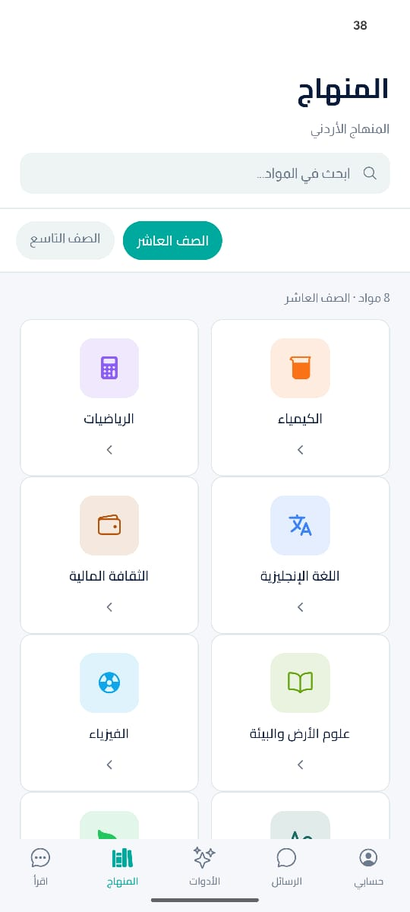
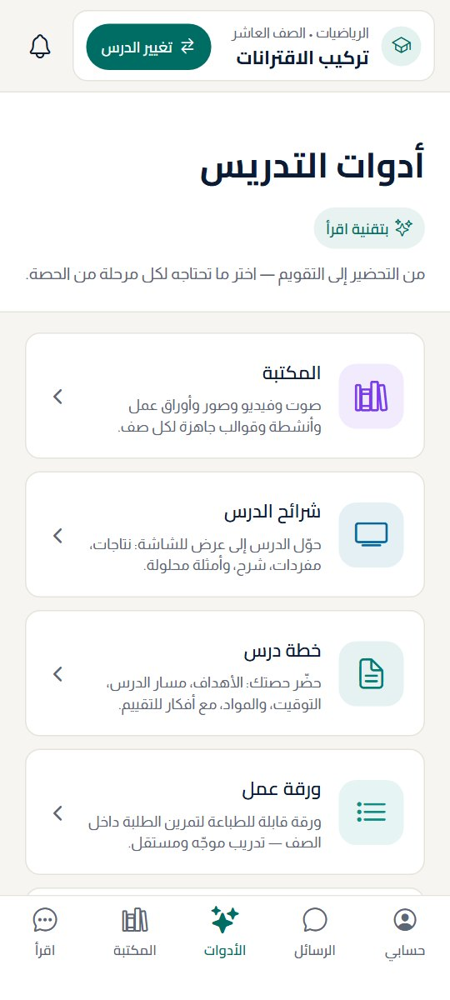
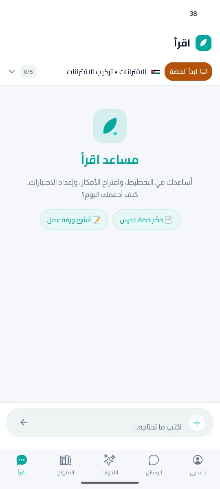
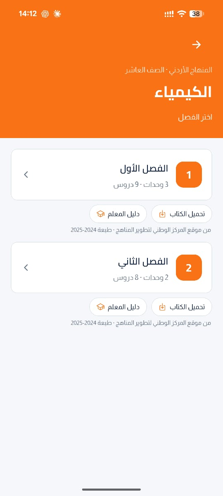

من خطة الدرس إلى ورقة العمل والاختبار، يساعدك اقرأ على إعداد مواد حصّتك انطلاقًا من نتاجات التعلّم في المنهاج الأردني. راجعها، وعدّلها بما يناسب طلبتك، ثم اطبعها أو اعرضها في الصف.
مجاني خلال النسخة التجريبية · يعمل من المتصفح على الحاسوب والهاتف



أنت تعرف طلبتك واحتياجاتهم. اقرأ يساعدك على إعداد المحتوى، وأنت تضيف خبرتك وتختار ما يناسب حصّتك.

حدّد الصف والمادة والوحدة والدرس، ليبني اقرأ المحتوى على نتاجات التعلّم الخاصة به.
يراجع اقرأ الإجابات الرياضية آليًا للمساعدة على تقليل الأخطاء، ويوضّح ما يحتاج إلى مراجعتك.
حضّر خطة الدرس، وأوراق العمل، والاختبارات، والأنشطة، وشرائح العرض. وأنشئ تقييمات تشاركها مع طلبتك برابط.
واجهة عربية واضحة ومحتوى مصمّم لمساعدة المعلّم في الأردن على التحضير والاستخدام داخل الصف.
اختر الصف والمادة والوحدة والدرس، ثم اطّلع على نتاجات التعلّم التي يبني عليها اقرأ المحتوى.
خطة درس، أو ورقة عمل، أو اختبار قصير، أو نشاط، أو شرائح عرض.
راجع المحتوى وأضف لمستك بما يناسب مستوى طلبتك، ثم اطبعه أو اعرضه في الصف.
شاهد كيف تحضّر حصّتك مع اقرأ
اقرأ مساعد تعليمي عربي للمعلمين في الأردن. يساعدك على إعداد خطط الدروس، وأوراق العمل، والاختبارات، والأنشطة، وشرائح العرض، انطلاقًا من الدرس ونتاجات التعلّم التي تختارها.
نعم. يعتمد اقرأ على نتاجات التعلّم الواردة في مناهج المركز الوطني لتطوير المناهج للدرس الذي تختاره ضمن المناهج المتاحة في المنصّة. ويمكنك تصفّح الصفوف والمواد والوحدات والدروس قبل إنشاء حساب.
يمكنك إعداد خطط دروس، وأوراق عمل، واختبارات قصيرة، وأنشطة صفية، وشرائح عرض، ورسائل لأولياء الأمور. كما يمكنك إنشاء تقييمات تشاركها مع طلبتك برابط، مع تصحيح إجاباتهم داخل المنصّة.
يستخدم اقرأ أداة تحقق رياضية لمراجعة الإجابات قبل عرضها. وإذا تعذّر التحقق من إجابة، يوضّح لك أنها تحتاج إلى مراجعة. تساعد هذه الخطوة على تقليل الأخطاء، وتبقى مراجعتك للمحتوى ضرورية قبل استخدامه مع طلبتك.
تضم المنصّة أكثر من ٥٠ زوجًا من الصف والمادة، من الصف الأول إلى العاشر، ومنها الرياضيات والعلوم والفيزياء والكيمياء والأحياء واللغتان العربية والإنجليزية والتربية الإسلامية والمهارات الرقمية، بأكثر من ١٨٠٠ درس ونتاجاتها. تختلف التغطية بحسب الصف والمادة؛ تصفّح صفحة المناهج للاطلاع على المتاح، وأخبرنا بما تحتاج إلى إضافته.
لا. يمكنك استخدام اقرأ مباشرة من المتصفح على الحاسوب أو الهاتف أو الجهاز اللوحي. ولتجربة تطبيق أندرويد مبكرًا ولنُعلمك حين ينزل على متجر Play، سجّل بريدك، ويُفضَّل بريد حساب Google الذي تستخدمه على هاتفك. تطبيق آيفون قيد التطوير.
نعم، استخدام اقرأ مجاني بالكامل خلال النسخة التجريبية. نواصل تطوير المنصّة وإضافة التحسينات بناءً على تجارب المعلمين وملاحظاتهم.
أفكار عملية للمعلم، مكتوبة للصف الأردني.
تطبيق أندرويد قريبًا. سجّل بريدك لتصلك دعوة التجربة المبكرة، ثم إشعار حين ينزل التطبيق على متجر Play. يُفضَّل بريد حساب Google الذي تستخدمه على هاتفك، فالتجربة المبكرة تُفتح عبر ذلك الحساب.
مادة تحتاجها؟ أداة تتمنّاها؟ خطوة يمكن أن تكون أسهل؟ شاركنا تجربتك واقتراحاتك، وساعدنا على تطوير اقرأ بما يخدم يومك الدراسي.
أو راسلنا على info@iqrra.com
اختر درسًا، وجهّز أول مادة تعليمية لك مع اقرأ.